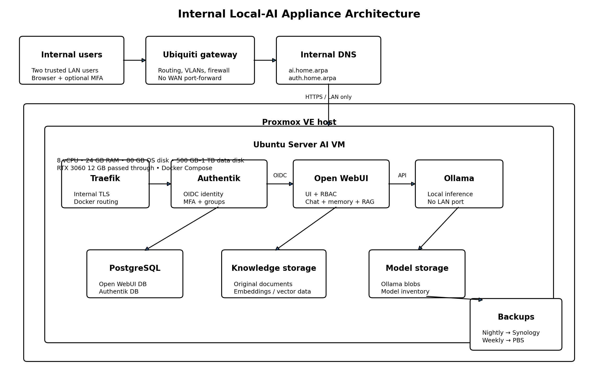

Target: internal-only local AI appliance on Proxmox, with Ubuntu Server, RTX 3060 passthrough, Traefik, Authentik, Open WebUI, Ollama and PostgreSQL.

Choose names under a domain you control, for example:
AI VM address: 192.168.1.63
Open WebUI: ai.example.net
Authentik: auth.example.netReplace these examples everywhere in .env.
Configure local DNS overrides on the Ubiquiti gateway so both names resolve to the VM address for all LAN clients. Do not create public DNS records or WAN port forwards. See section 15 for the Ubiquiti DNS steps.
Confirm:
Enable SVM/IOMMU in firmware.
For an AMD host, add the IOMMU option to the Proxmox kernel command line. The exact file depends on whether the host uses GRUB or systemd-boot.
Example GRUB configuration:
# Edit the kernel command line.
sudo nano /etc/default/grubSet:
GRUB_CMDLINE_LINUX_DEFAULT="quiet amd_iommu=on iommu=pt"Then:
# Rebuild boot configuration and reboot.
sudo update-grub
sudo update-initramfs -u -k all
sudo rebootVerify:
dmesg | grep -Ei 'AMD-Vi|IOMMU'
find /sys/kernel/iommu_groups/ -type lCheck that the GPU and its HDMI audio function can be passed through safely. Do not continue if an IOMMU group contains host-critical devices that cannot be isolated.
Recommended Proxmox settings:
Install Ubuntu before attaching the GPU if that is easier for console access.
Attach both GPU functions using PCI passthrough. Enable PCI-Express. Use the ROM-Bar/default settings first; change them only when troubleshooting requires it.
Update the VM:
sudo apt update
sudo apt full-upgrade -y
sudo apt install -y qemu-guest-agent ca-certificates curl gnupg git jq openssl restic
sudo systemctl enable --now qemu-guest-agentSet the host name and time zone:
sudo hostnamectl set-hostname ai-server
sudo timedatectl set-timezone Australia/MelbourneMount the second disk at /opt using its UUID in /etc/fstab.
Create the application path:
sudo mkdir -p /opt
sudo chown "$USER":"$USER" /optInstall an Ubuntu-supported production NVIDIA driver suitable for the installed Ubuntu release.
After reboot:
nvidia-smiThe RTX 3060 must appear without driver/library mismatch errors.
Use Docker's official Ubuntu repository rather than Ubuntu's older docker.io package.
After installation:
sudo systemctl enable --now docker
sudo docker version
sudo docker compose versionAdding a user to the docker group grants root-equivalent control over the host. Use it only for trusted administrators.
Install the toolkit from NVIDIA's package repository, then configure Docker:
sudo nvidia-ctk runtime configure --runtime=docker
sudo systemctl restart dockerTest GPU access:
sudo docker run --rm --gpus all ubuntu:24.04 nvidia-smiDo not continue until this succeeds.
cd /opt
git clone <YOUR_GITHUB_REPOSITORY_URL> local-ai-appliance
cd local-ai-appliance
cp .env.example .env
./scripts/generate-secrets.sh
chmod 600 .envEdit:
nano .envSet:
TRAEFIK_BIND_IPAI_FQDNAUTH_FQDNACME_EMAIL — email address for Let's Encrypt expiry noticesCF_DNS_API_TOKEN — Cloudflare API token with Zone → DNS → Edit permission scoped to your zoneTraefik obtains and renews certificates automatically using the Let's Encrypt DNS-01 challenge against Cloudflare. No manual certificate files are needed.
In the Cloudflare dashboard: My Profile → API Tokens → Create Token → Edit zone DNS template.
Scope the token to your zone only. Copy the token into CF_DNS_API_TOKEN in .env.
Set ACME_EMAIL to an address that can receive Let's Encrypt expiry notices (Traefik auto-renews, but this is a fallback contact).
Add local DNS overrides on the Ubiquiti gateway so that both FQDNs resolve to the VM LAN address for all clients on the network. Traffic never leaves the LAN; the Cloudflare API token is used only for the ACME challenge, not for routing.
See section 15 for the full Ubiquiti network policy steps.
On first docker compose up, Traefik requests certificates from Let's Encrypt via Cloudflare DNS and stores them in the traefik_acme Docker volume. Check the Traefik log for Obtaining and Certificate obtained messages:
docker compose logs traefik | grep -i certVerify that browsers trust both internal names before configuring OIDC.
./scripts/preflight.sh
docker compose configInspect published ports:
docker compose config | grep -A5 'ports:'Only Traefik should publish ports.
docker compose up -d postgres redis authentik-server authentik-worker traefik
docker compose ps
docker compose logs -f authentik-serverOpen:
https://auth.example.netComplete the initial Authentik setup.
Create groups:
ai-admins
ai-usersAdd the owner to both groups and the second user to ai-users.
Create an OAuth2/OpenID provider and application:
Copy the client ID and secret into .env.
Confirm the discovery URL generated by Authentik and update OPENID_PROVIDER_URL where necessary.
Open WebUI reads the groups claim from the OIDC token to assign admin or user roles automatically. Authentik does not include group membership in tokens by default.
In Authentik: Customisation → Property Mappings → Create → Scope Mapping.
Add this mapping to the Open WebUI provider under Advanced protocol settings → Scope mappings.
Restrict application access to the ai-users group. Authentik will deny login to anyone not in that group before Open WebUI is reached.
docker compose up -d ollama faster-whisper kokoro open-webui
docker compose psPull the coding model and the embedding model required by Mem0:
docker exec ollama ollama pull qwen2.5-coder:14b-instruct-q4_K_M
docker exec ollama ollama pull nomic-embed-text:latestOptionally pull a general-purpose model as a fallback.
Kokoro downloads its voice models on first start (~5 GB image). Wait for the healthcheck to pass before testing TTS in Open WebUI.
Open:
https://ai.example.netSign in through Authentik.
- Shared Homelab Knowledge
- owner-private knowledge
- second-user-private knowledge
Do not store passwords, API keys or private keys in memory.
1.1.1.1, 8.8.8.8) for ACME propagation checks;Remove SSH access from general user networks.
In the Ubiquiti Network controller: Settings → Networks → DNS or Settings → Internet → DNS, add local DNS records:
ai.example.net → 192.168.1.63
auth.example.net → 192.168.1.63Replace with your actual FQDNs and VM address. This ensures LAN clients resolve both names to the VM without going through public DNS.
Mount or configure the encrypted Restic repository.
Run:
./backup/backup.sh
restic snapshotsCreate a systemd timer for nightly execution. Configure a weekly PBS VM backup after the application backup window.
docker compose ps
nvidia-smi
docker exec ollama ollama ps--api=false).Model size: 7B–9B Q4
Context: 32768
Loaded models: 1
Parallel generations: 1
Maximum human users: 2
STT: faster-whisper medium (CPU)
TTS: Kokoro 82M (CPU), default voice af_bellaOnly increase these after measuring VRAM and responsiveness.
Before every meaningful upgrade:
./backup/backup.shTrigger a PBS backup, read upstream release notes, update pinned tags, and then:
./scripts/update.shValidate OIDC, RBAC, chats, memory and RAG after every upgrade.
See [reference/SOURCES.md](reference/SOURCES.md). Upstream documentation is authoritative for current commands and environment variables.